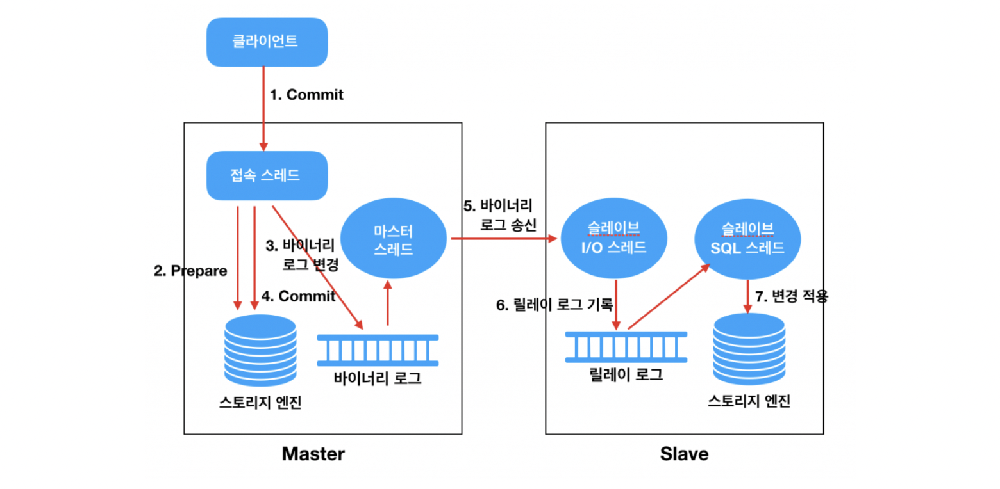

인프라를 업그레이드 하는 방법에는 두 가지가 있습니다. 기존의 서버에 CPU나 메모리 같은 하드웨어의 성능을 높이는 스케일-인 방식과 기존의 서버와 비슷한 사양의 서버 대수를 증가시키는 스케일-아웃 방식입니다. MySQL Replication은 스케일-아웃 방식에 해당되며, 스케일-인보다 비용이 저렴하고 갑자기 늘어나는 트래픽을 대응하는 데 훨씬 더 유연한 구조를 가지는 장점이 있습니다. MySQL Replication의 아키텍쳐를 살펴보고 적용하는 방법까지 알아보도록 하겠습니다.
복제 아키텍쳐

바이너리 로그
MySQL 서버에서 발생하는 모든 변경 사항은 별도의 로그 파일에 순서대로 기록되는데, 이를 바이너리 로그라고 합니다.
데이터의 변경 내역뿐만 아니라 데이터베이스나 테이블의 구조 변경과 계정이나 권한의 변경 정보까지 모두 저장됩니다.
소스 서버에서 생성된 바이너리 로그가 레플리카 서버로 전송되고 레플리카 서버에서는 해당 내용을 로컬 디스크에 저장한 뒤 자신이 가진 데이터에 반영함으로써 소스 서버와 레플리카 서버 간에 데이터 동기화가 이뤄집니다.
릴레이 로그
레플리카 서버에서 소스 서버의 바이너리 로그를 읽어 들여 따로 로컬 디스크에 저장해둔 파일을 릴레이 로그라고 합니다.
바이너리 로그 덤프 스레드 - 위 그림의 마스터 스레드
레플리카 서버는 데이터 동기화를 위해 소스 서버에 접속해 바이너리 로그 정보를 요청합니다.
소스 서버에서는 레플리카 서버가 연결될 때 내부적으로 바이너리 로그 덤프 스레드를 생성해서 바이너리 로그의 내용을 레플리카 서버로 전송합니다.
레플리케이션 I/O 스레드 - 위 그림의 슬레이브 I/O 스레드
I/O 스레드는 소스 서버의 바이너리 로그 덤프 스레드로부터 바이너리 로그 이벤트를 가져와 로컬 서버의 파일(릴레이 로그)로 저장하는 역할을 담당합니다.
레플리케이션 SQL 스레드 - 위 그림의 슬레이브 SQL 스레드
I/O 스레드에 의해 작성된 릴레이 로그 파일의 이벤트들을 읽고 실행합니다.
적용해보기
복제 계정 준비
1
mysql> CREATE USER '${Replication용 USER 이름}'@'%' IDENTIFIED BY '${설정할 비밀번호}';
1
mysql> GRANT REPLICATION SLAVE ON *.* TO '${생성한 Replication용 USER 이름}'@'%' IDENTIFIED BY '${비밀번호}';
mysql> CHANGE MASTER TO MASTER_HOST='{소스_DB서버_IP}', MASTER_PORT={PORT}, MASTER_USER='{USER_이름}', MASTER_PASSWORD='{USER_비밀번호}', MASTER_LOG_FILE='{로그_파일_이름}', MASTER_LOG_POS={POS};
1
mysql> START SLAVE;
위의 명령어를 입력하여 SLAVE를 시작시키고
1
mysql> SHOW SLAVE STATUS\G;
위의 명령을 입력하여 대략 아래와 같은 상태를 확인할 수 있습니다.
1 2 3 4 5 6 7 8
Slave_IO_State: Waiting for master to send event
...
Slave_IO_Running: YES Slave_SQL_Running: YES
...
만약 Slave_IO_State, Slave_IO_Running, Slave_SQL_Running이 하나라도 다르게 출력될 경우 소스 서버의 호스트명이나 mysql의 포트 또는 레플리카 서버에서 사용하는 복제용 접속 계정과 비밀번호가 잘못 입력됐을 가능성이 높습니다. 또한 소스 서버와 레플리카 서버 간에 네트워크상의 문제가 없는지 확인해보는 것이 좋습니다.
원인을 해결했다면,
1
mysql> RESET SLAVE ALL;
리셋을 한 후에
1
mysql> CHANGE MASTER TO MASTER_HOST='{소스_DB서버_IP}', MASTER_PORT={PORT}, MASTER_USER='{USER_이름}', MASTER_PASSWORD='{USER_비밀번호}', MASTER_LOG_FILE='{로그_파일_이름}', MASTER_LOG_POS={POS};
Master DB 설정하는 명령을 다시 입력하고,
1
mysql> START SLAVE;
SLAVE를 시작합니다.
SpringBoot DataSource 설정
읽기전용(Readonly) 작업은 Slave DB에 요청하고 읽기쓰기(Read/Write) 작업은 Master DB에 요청하려고 합니다. 즉, @Transaction(readonly = true)인 경우 Slave DB와 Master DB에, 나머지 CUD 작업은 Master DB에 요청하도록 분기 처리를 해주어야합니다.
먼저, DataSource 설정이 필요합니다. application.yml에 해당 설정 정보를 입력해줍니다. 저는 깃헙 저장소에 EC2 IP가 노출되는 게 싫어서 application-datasource.yml을 만들어 서브모듈 프라이빗 저장소에 보관하고있습니다. application-datasource.yml 설정은 다음과 같습니다.
public static class DataSourceNames<T> { private final List<T> dataSourceNames; private int sequence = 0;
public DataSourceNames(List<T> dataSourceNames) { this.dataSourceNames = dataSourceNames; }
public T getNext() { if (sequence >= dataSourceNames.size()) { sequence = 0; } return dataSourceNames.get(sequence++); } }
}
ReplicationDataSourceRouter 클래스는 AbstractRoutingDataSource 클래스를 상속받아야 합니다. determineCurrentLookupKey() 메서드를 재정의하여 트랜잭션에 따라 Master와 Slave로 분기한 후에 datasource의 key 값을 반환해줍니다. 여러 DB 서버에 균형있는 부하 분산을 위해 sequence 값을 증가시키면서 각 DB를 번갈아 가면서 순회합니다.
@RequiredArgsConstructor @EnableConfigurationProperties(ReplicationDataSourceProperties.class) @Configuration public class ReplicationDataSourceConfig {
private final ReplicationDataSourceProperties dataSourceProperties; private final JpaProperties jpaProperties; // (1)
@Bean public DataSource routingDataSource() { Map<Object, Object> dataSources = new LinkedHashMap<>(); DataSource masterDateSource = createMasterDateSource(); dataSources.put("master", masterDateSource);
(1) - application-datasource.yml 파일의 spring.jpa 설정을 가져올 수 있습니다.
(2) - Spring은 트랜잭션에 진입하는 순간 설정된 DataSource의 커넥션을 가져옵니다. 하지만, 저희는 트랜잭션에 따라 마스터와 슬레이브로 분기 처리를 해줘야하기 때문에 LazyConnectionDataSourceProxy를 사용하여 쿼리가 실행될 때 Datasource를 결정하여 커넥션을 가져오도록 합니다.